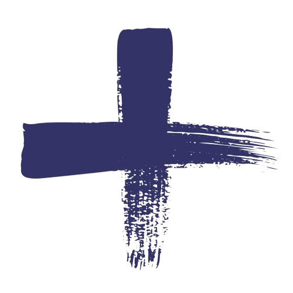

 Sobre a Escola da Ilha
A Escola da Ilha foi fundada em 1989 por Lilia D'Albertas, uma pedagoga experiente. Lilia participou ativamente dos movimentos que renovaram o pensamento pedagógico no Brasil nas décadas de 1960 e 1970. Após sua saída em 2005, Rebecca Costa Prado Garcia assumiu a direção, seguida por Eliton de Amorim em 2009. A escola é reconhecida por sua abordagem construtivista e pela qualidade do ensino em Florianópolis.